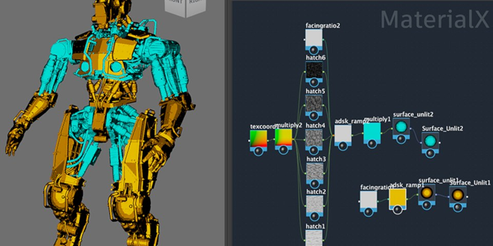
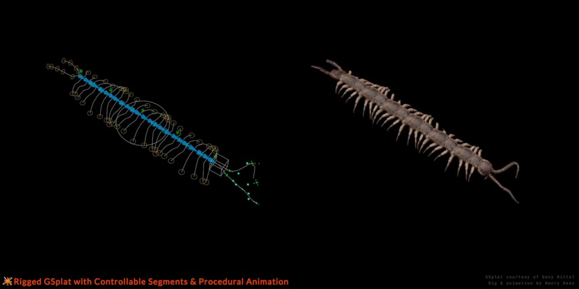

#08 · maya
Maya 2027：Smart Bevel、ngSkinTools、MotionMaker
Maya 2027 同時更新 modeling、skinning、Bifrost 與 AI animation，對角色 pipeline 影響廣。

SOURCE VISUAL
· Local visual evidence · 點圖開啟原始來源
Maya ★★★★★
完整分析
Production 重點
Smart Bevel 對 Boolean/不均勻 topology 的 hard-surface cleanup 有直接價值。
導入判斷
ngSkinTools 內建讓 layer-based skinning 更接近標準功能。
實測 / 風險
升版需測 plugin、Python、FBX、rig deformation 與現有 toolset。
來源 ↗
#09 · blender
Blender 5.2 Remote Asset Libraries
Blender 資產庫開始支援 remote hosting，讓團隊 asset distribution 從共享磁碟走向可控遠端來源。
Blender ★★★★★
完整分析
Production 重點
remote asset library 對多人角色/場景 production 的規模化很重要。
導入判斷
可把公司共用材質、node groups、base assets 做成中央分發。
實測 / 風險
需測 cache、版本 pinning、離線模式、權限與破壞性更新治理。
來源 ↗
#15 · houdini
Houdini 22：3DGS、Copernicus、KineFX 與 USD 新方向
Sneak Peek 顯示 native Gaussian、retopo、terrain、KineFX、crowd 與 SOP-based USD authoring 同步擴張。

SOURCE VISUAL
· Local visual evidence · 點圖開啟原始來源
Houdini ★★★★☆
完整分析
Production 重點
3DGS create/light/rig 表示 SideFX 把 splat 當正式 DCC primitive。
導入判斷
KineFX、nested Motion Mixer、retarget recipes 對 animation pipeline 也有直接價值。
實測 / 風險
正式 release 前仍需把 sneak-peek 與實際 shipping feature 分開。
來源 ↗
#27 · blender
Blender 5.2 Geometry Nodes：Bundles、Lists、Sound
Geometry Nodes 的資料結構與跨物件傳遞能力擴張，讓大型 procedural system 更容易模組化。
Blender ★★★★☆
完整分析
Production 重點
Geometry Bundles 可跨 modifier/object 邊界攜帶任意資料。
導入判斷
Lists 與新的 node groups 讓程序資產不必靠大量平行 socket 維護狀態。
實測 / 風險
值得測 complex GN asset 的可讀性、evaluation cost 與 version migration。
來源 ↗
#38 · maya
MableLink：Maya 場景一鍵同步 Blender / Unreal
保留 rig、animation、blendshape、camera、light、hierarchy 與 PBR materials，並支援 live re-sync 與可攜 .mable package。
Maya ★★★★☆
完整分析
Production 重點
不是 flatten export；目標是保存 animation、blendshape、camera、pivot、hierarchy 與 PBR 材質。
導入判斷
Maya→Blender/UE live re-sync 可降低中間 FBX/手動材質重建，並提供 portable package。
實測 / 風險
應測 constraint/bake、材質 parity、單位軸向、large scene 與多人版本同步。
來源 ↗
#49 · addon
Weight Paint Box：多物件 Weight Painting 與 Rigify 改善
以 deformation box 取代傳統 brush 的部分權重工作，更新支援多物件、overlay 與更一致的 box 行為。
Addon ★★★★☆
完整分析
Production 重點
可同時處理多個分離物件的 weight painting，對角色服裝/配件綁定較實用。
導入判斷
Draw Bone 結合 Rigify，讓快速建骨與權重修正集中在同一 addon workflow。
實測 / 風險
需和原生 weight paint 比較 extreme joint、mirror、多 vertex groups 與版本更新穩定性。
來源 ↗
#51 · other-dcc
Arnold 7.5.1：更新 DCC Integrations 與 Cloud Rendering
Arnold 7.5.1 同步更新 Maya/Max/Houdini/C4D/Katana integrations，影響 studio render farm 與 DCC version matrix。
Render ★★★★☆
完整分析
Production 重點
Maya/Max 新版內建 plugin 可能不是最新，需要另外控版本。
導入判斷
跨 DCC integration 同步是 studio pipeline 穩定性的核心。
實測 / 風險
升版前應跑 AOV、OCIO、shader、GPU/CPU parity 與 farm reproducibility。
來源 ↗
#53 · addon
Leon's Modeling Toolkit：Max/Maya/Hammer 操作習慣進 Blender
集合 world-aligned texturing、clip、mirror、Maya-style merge、cable 等模型師高頻工具。
Blender ★★★★☆
完整分析
Production 重點
對從 3ds Max/Maya 轉 Blender 的人，操作遷移成本本身就是 production 成本。
導入判斷
非破壞 mirror、world-aligned texture、clip 與 merge 都是高頻 hard-surface 操作。
實測 / 風險
要確認快捷鍵衝突、Blender 版本鎖定與多人安裝維護。
來源 ↗
#55 · blender
Blender 5.3：Principled BSDF Dispersion
Cycles Principled BSDF 加入 dispersion，玻璃、寶石與高色散材質可用更標準化方式製作。
Blender ★★★☆☆
完整分析
Production 重點
功能位於 5.3 開發線，需和 LTS production 基線分開。
導入判斷
能減少自建 RGB refraction shader 的維護成本。
實測 / 風險
要測 render cost、noise、caustics 與不同 IOR/material thickness。
來源 ↗
#60 · other-dcc
Flame 2027.1：Isolate、GLSL Pixel Expression、ProRes RAW
ML-assisted matte、直接 GLSL pixel node 與 ProRes RAW import 強化 finishing pipeline。
DCC ★★★☆☆
完整分析
Production 重點
Isolate 取代既有 matte workflow，降低 roto/selection 操作摩擦。
導入判斷
Pixel Expression 可直接在 UI 編 shader logic，適合 technical finishing。
實測 / 風險
主要適用影像/VFX finishing，對 game art 屬跨領域參考。
來源 ↗